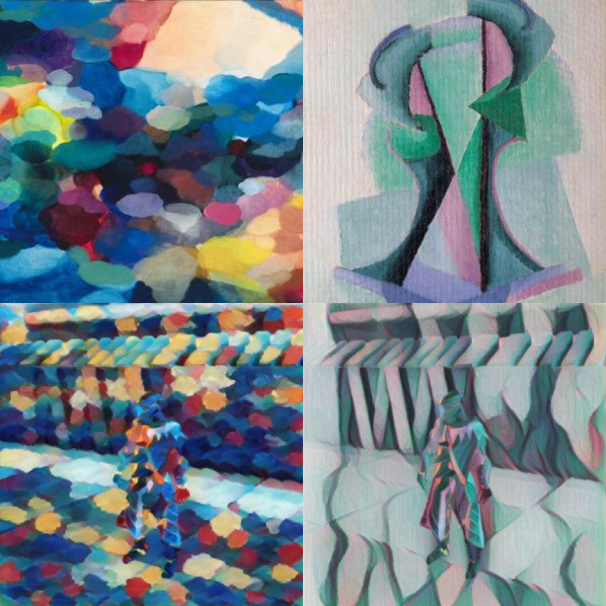

In-Game Style Transfer Experiments Pt.6
Introduction
Every time I think I’m ready to wrap up my style transfer project, I come across something that causes me to spend another week experimenting and troubleshooting. I’ve spent way more time on this topic than I intended and the the list future projects keeps growing. Therefore, I’ve made the decision to stop here and move on. Unfortunately, that does mean making some changes to the end-to-end style transfer tutorial.
Arbitrary Style Transfer
As I mentioned in the weekly recap, I came across an implementation of the same style transfer model that Unity used for its style transfer project. However, this one hadn’t been watered down to run on a PS4 Pro. I was impressed by the results, but it takes days instead of hours to train. Here are a couple examples using style images from Unity’s sample project.

This method uses two deep learning models. One is based the same fast_neural_style model that I used in my first style transfer tutorial. It takes in an image and learns to generate a stylized output based on a target style image. The second model learns to predict values for part of the stylizing model that would enable the stylizing model to produce a stylized image based on a target style. The stylizing model would normally learn these values for a specific style image during training.
The models are trained on a large dataset of style images and content images to help them generalize. After training, the predictor model takes in an arbitrary style image and outputs the required values for the stylizing model. The stylizing model takes in those values along with a content image and outputs a stylized version.
This method also has an added benefit of allowing the user to adjust the influence of the style image after training. The model in Unity’s sample project seems to have the style influence set pretty low. I believe this is to minimize the flickering that is present when using the regular fast_neural_style model. As I’ve discovered, it’s difficult to leverage the existing methods to maintain consistency between frames and still get playable framerates.
Change in Plans
After completing the Google Colab notebook for the end-to-end style transfer tutorial, I began testing the code on a variety of styles as well as sample data from Unity. The goal was to identify areas where the models struggled. The good news is I successfully found areas where the models struggled. The bad news is that I probably won’t be able to find a solution for those weaknesses in a reasonable amount of time.
The video stylization model that I’ve been working with does a great job maintaining consistency between frames as long as the scene doesn’t change too drastically. However, camera input from 3D video games tend to change a lot between frames. I’ve found that the video stylization model doesn’t maintain frame consistency when moving around in a 3D environment.
The GitHub project does provide methods for improving temporal consistency. However, I don’t know if these methods would be practical for stylizing a video game. It’s also unclear if the model would still be able to generalize to different scenes with these methods.
Since I’m not allowing myself to spend any more time experimenting I’ve decided not to use the video stylization model for the tutorial. Instead, I’ll be using a modified version of the fast_neural_style model. There will be more flickering than I’d like, but the training process will be much simpler.
Conclusion
I’m disappointed that I wasn’t able to resolve the flickering while maintaining playable frame rates. Flickering can be reduced by using a lower style influence. However, that feels like it defeats the whole point of style transfer. I’ll probably come back to style transfer at some point. For now, it’s time to move on to other projects.